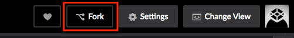
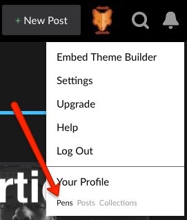

Инструкция по работе с онлайн-редактором Codepen
-
Перейдите по ссылке на codepen.io.
-
На открывшейся странице заполните форму регистрации. После заполнения нажмите кнопку Sign Up.

-
На следующей странице можете заполнить личные данные. Это не обязательно, на ваше усмотрение.
Нажмите кнопку Save & Continue.
-
Перейдите по ссылке на странице с домашним заданием. Она расположена под заголовком.
-
Перед вами открылось окно, разделенное на две части. В верхней части - редактор HTML. В нижней части вы можете в реальном времени видеть результат вашей работы.

-
Нажмите вверху кнопку Fork - это создаст вашу личную копию задания.
 -
Выполняйте задание и не забывайте нажимать Save после сделанных изменений.

-
Найти сохраненную работу вы сможете в разделе «Pens», на вкладке «Forked».
